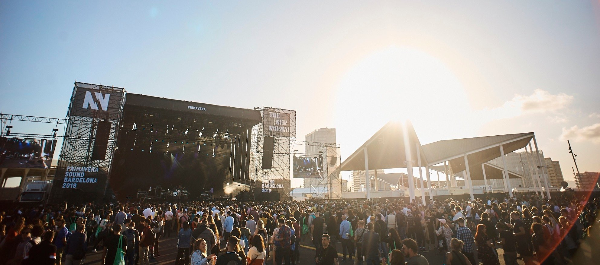
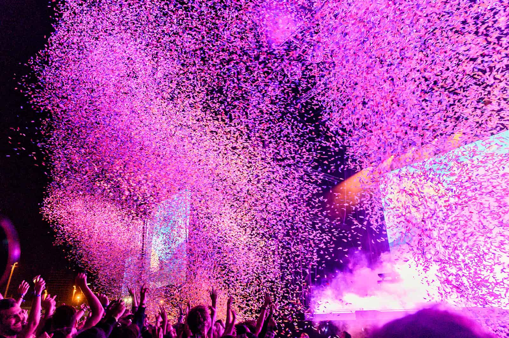

El concierto será el 15 y 16 de agosto de 2022 en el parque del Fórum es un parque público situado entre la ciudad de Barcelona y San Adrián del Besós. Fue creado en 2004 con un diseño de Elías Torres y José Antonio Martínez Lapeña.
Parque moderno, ubicado al final de la Diagonal, y así denominado como Diagonal Mar. Fue la Sede del Forúm de Culturas del 2004, de ahí su nombre como parque. Actualmente ofrece espacio para conciertos y celebraciones, así como de auditorios para distintos eventos.
Reseña Trip Advisor
 El parque del Fórum tiene capacidad para albergar a más de 50 mil asistentes
¿Cómo compro boletos?
El concierto será el 15 y 16 de agosto de 2022 en el parque del Fórum es un parque público situado entre la ciudad de Barcelona y San Adrián del Besós. Fue creado en 2004 con un diseño de Elías Torres y José Antonio Martínez Lapeña.
¿Cuál será la duración?
El Festival está planeado para ser una experiencia total ambos días. Tendremos áreas de comida, descanso y entretenimiento, además de los conciertos consecutivos de cada una de las bandas. La música comienza a las 15:00 horas y se espera terminar a las 2:00 horas del día siguiente.
¿Cómo puedo llegar a la sede?
Por medio de autobús Lanzadera. Ticket: 2€. Horarios: jueves de 00:00 a 05:00 horas y viernes de 02:00 a 05:00 horas. Líneas: H16, H14, 7, 136, V31 y 143. Horarios de 6:30 a 23:15 horas aproximadamente.
Trambesós (Línea T4): estación Fòrum correspondencia con Metro (L4). Servicio ininterrumpido de jueves a domingo.
Línea 4: Estación El Maresme - Fòrum (Salida Rambla Prim). El recinto del festival (Parc del Fòrum) se encuentra a 150 metros de la estación de metro El Maresme – Fòrum. Horarios: de lunes a jueves de 05:00 a 00:00 horas; viernes y vísperas de festivo de 05:00 a 02:00 horas. Sábados servicio continuo.
Fuente: primaverasound.com  Asiste preparado para disfrutar un día de música
¿Qué objetos están prohibidos para ingresar?
Bolsos grandes o mochilas.
Neveras.
Comida preparada.
Contenedores de vidrio o latas, alcohol o drogas ilícitas.
Muebles o sillas.
Carreolas.
Paraguas o parasoles.
Animales (excepto perros guía).
Dispositivos de grabación de vídeo o audio profesionales (incluyendo cámaras, grabadores de vídeo o audio y iPads o tablets).